Large vision-language models (VLMs) have improved embodied question answering (EQA) agents by providing strong semantic priors for open-vocabulary reasoning. However, when used directly for step-level exploration, VLMs often exhibit frontier oscillations, unstable back-and-forth movements caused by overconfidence and miscalibration, leading to inefficient navigation and degraded answer quality. We propose Prune-Then-Plan, a simple and effective framework that stabilizes exploration through step-level calibration. Instead of trusting raw VLM scores, our method prunes implausible frontier choices using a Holm-Bonferroni inspired pruning procedure and then delegates final decisions to a coverage-based planner. This separation converts overconfident predictions into conservative, interpretable actions by relying on human-level judgments to calibrate the step-level behavior of VLMs. Integrated into the 3D-Mem EQA framework, our approach achieves relative improvements of up to 49% and 33% in visually grounded SPL and LLM-Match metrics respectively over baselines. Overall, our method achieves better scene coverage under equal exploration budgets on both OpenEQA and EXPRESS-Bench datasets.
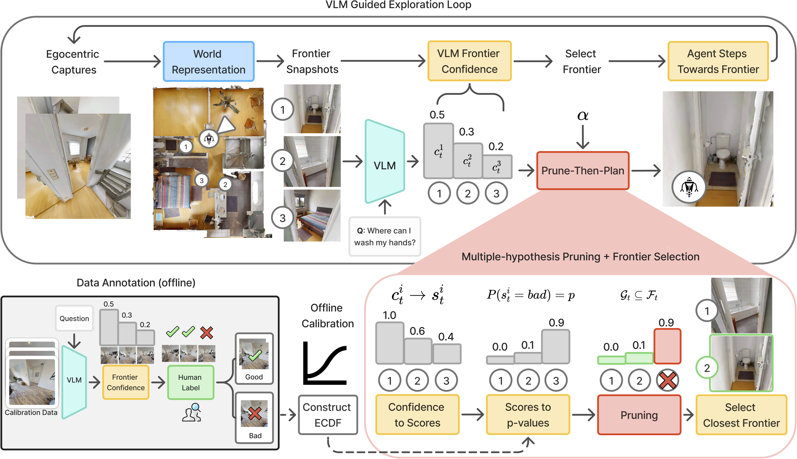
Overview of the Prune-Then-Plan method. The agent traverses the scene and passes egocentric captures to the 3D-Mem world representation to update scene memory and compute frontiers. We subsequently query the VLM to assess its confidence in each frontier’s potential to move the agent closer to a correct answer. The resulting confidences are converted into step-normalized scores and then into p-values via our empirical cumulative distribution function to support pruning. Finally, we employ multiple hypothesis testing to detect and prune bad frontiers, allowing the agent to proceed toward the nearest surviving frontier and iterate the process.
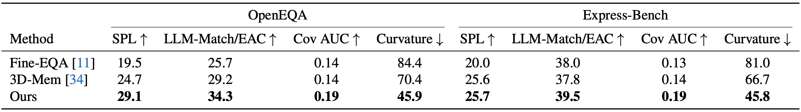
Comparison of different EQA exploration methods on OpenEQA and Express-Bench. Metrics include visually grounded efficiency (SPL) and answer quality (LLM-Match/EAC), scene coverage (Coverage AUC), and path smoothness (Curvature).
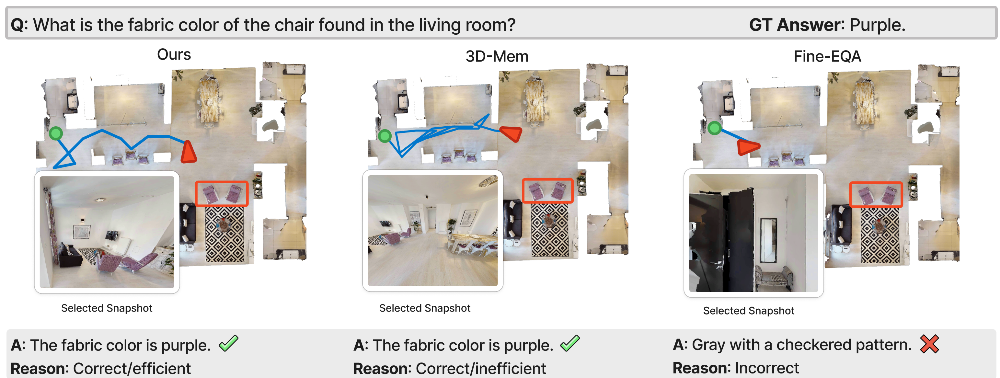
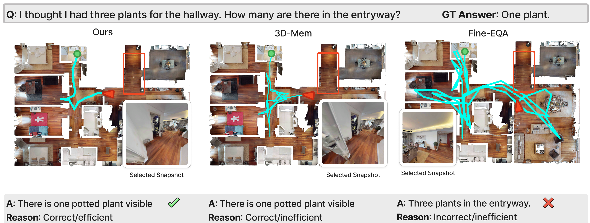
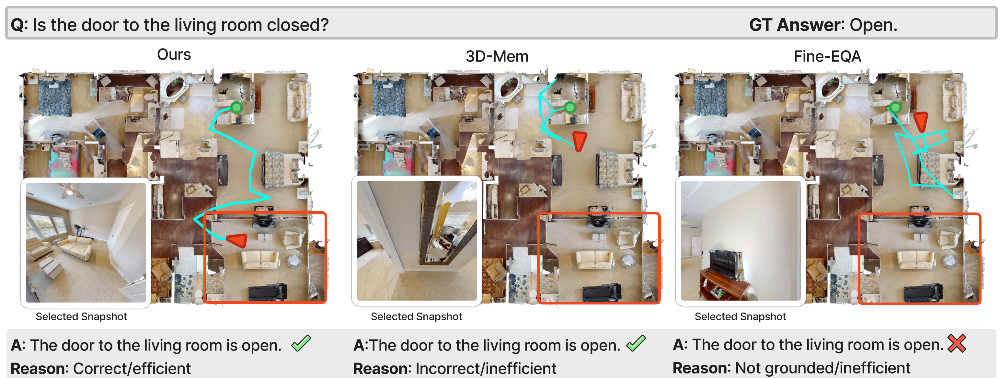
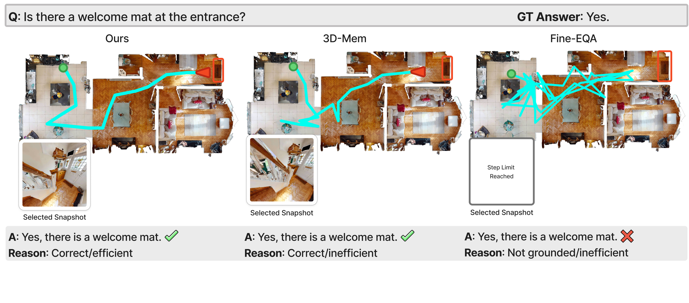
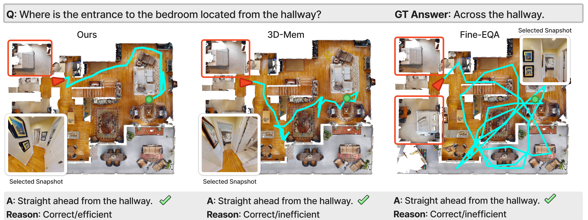
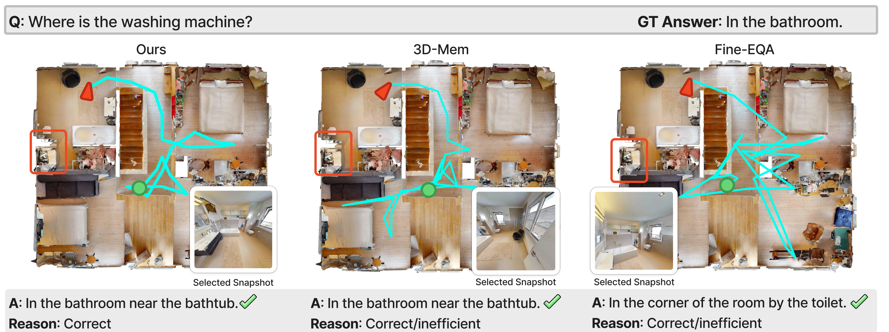
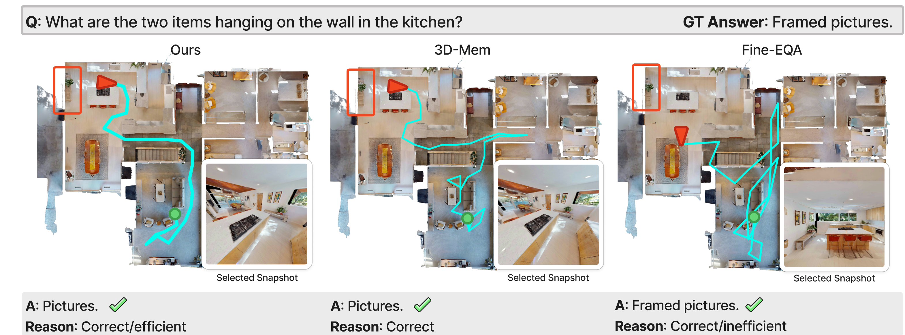
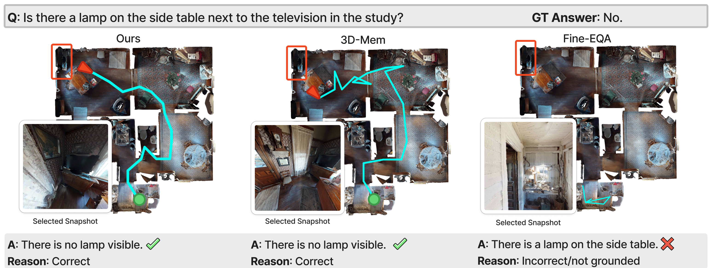
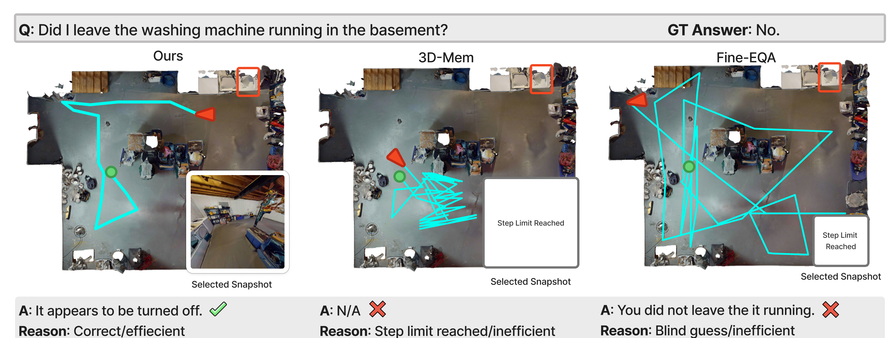
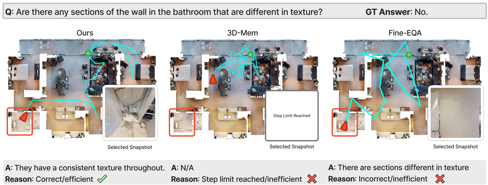
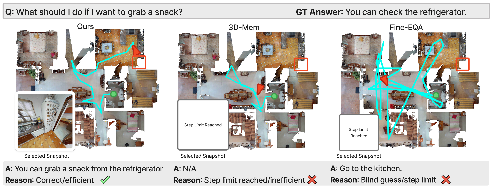
@misc{frahm2025prunethenplansteplevelcalibrationstable,
title={Prune-Then-Plan: Step-Level Calibration for Stable Frontier Exploration in Embodied Question Answering},
author={Noah Frahm and Prakrut Patel and Yue Zhang and Shoubin Yu and Mohit Bansal and Roni Sengupta},
year={2025},
eprint={2511.19768},
archivePrefix={arXiv},
primaryClass={cs.CV},
url={https://arxiv.org/abs/2511.19768},
}